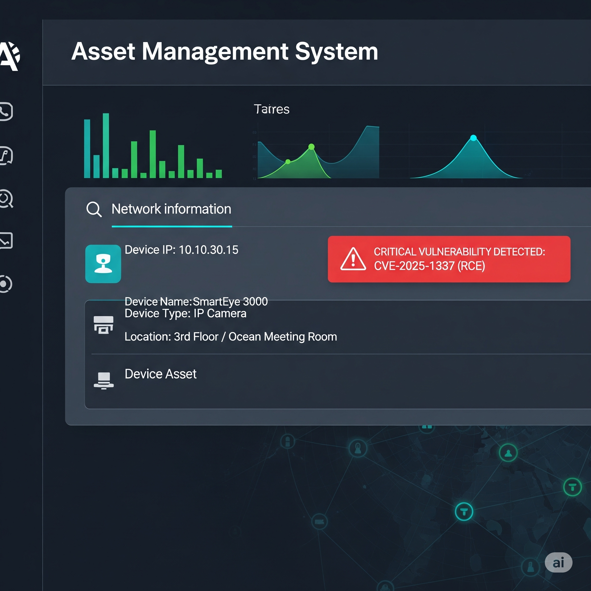

CyberScenario: IoT Security Crisis
ÇOLHAK Corporation – Advanced IoT Crisis Simulation
Welcome to the Scenario
In this interactive scenario, you are a member of the ÇOLHAK Corporation's cybersecurity team. Your mission is to analyze an evolving security threat, make critical decisions, and protect the company from a potential disaster. Carefully evaluate the information presented at each step. Are you ready?

🕒 07:15 – First Signal: SIEM Alert
As the day begins, Tier-1 SOC Analyst Ezgi notices a critical alert on the SIEM (Security Information and Event Management) dashboard. A correlation rule has been triggered: "Periodic Data Exfiltration from Critical Asset Network to Unknown C2 Server".

ALERT ID: 8451
TRIGGER: Correlation Rule - "Suspicious C2 Beaconing"
SOURCE IP: 10.10.30.15 (VLAN: IoT Devices)
DESTINATION IP: 88.54.12.219 (Reputation: Low, Category: Unknown)
PROTOCOL: UDP/443
OBSERVATION: A 128KB data packet is being sent every 5 minutes for the last 3 hours.Ezgi: "This isn't normal traffic. The source IP appears to be on the IoT VLAN, but the destination IP is a suspicious address we haven't seen before. I'm escalating this to Tier-2 (Alper) immediately."
🕒 07:30 – Simultaneous Development: Help Desk Ticket
Around the same time as Ezgi's analysis, an automated ticket from an employee arrives at the help desk. The ticket concerns the security camera in the 3rd-floor meeting room.
Ticket #7254 - Camera Performance Issue
User: Ayşe Yılmaz
Subject: The camera in the 3rd Floor Ocean Meeting Room is constantly freezing and its web interface is very slow. There was no such problem yesterday morning.
Help Desk Note: "Could be a standard network issue. Forwarded to the technical team."
🧑💻 08:00 – Alper’s In-Depth Analysis
Tier-2 Analyst Alper correlates the SIEM alert from Ezgi with the help desk ticket. He queries the suspicious IP address `10.10.30.15` in the company's Asset Management System.
The result is clear: The IP address belongs to a "SmartEye 3000" model IP camera in the 3rd Floor Ocean Meeting Room. A quick internet search reveals a recently disclosed critical vulnerability (CVE-2025-1337) in this model's firmware. This vulnerability allows for unauthorized Remote Code Execution (RCE).
Alper: "Okay, it all makes sense now. The slowdown in the camera isn't a malfunction; it's a symptom. The device has been compromised via a known vulnerability and is sending data to a C2 server as part of a botnet. We need to report this to our manager, Ceyda, immediately."
🏢 08:45 – Crisis Meeting with Manager Ceyda and the Moment of Decision

Alper summarizes the situation for Cybersecurity Manager Ceyda: "We have an IP camera that has been compromised using the CVE-2025-1337 vulnerability. For now, it's only communicating externally with small data packets, which is likely 'beaconing' activity. We haven't detected any lateral movement within the network yet. But that could happen at any moment."
Ceyda: "Understood. It seems we have two options. We either eliminate the risk immediately, or we use this opportunity to learn the enemy's tactics. The decision is yours. What do we do?"
Make your decision as a team:
Option A: Isolate and Patch the Device (The Safe Route)
Immediately disconnect the camera from the network. Take the device to a lab environment, capture its image, and update it with the latest firmware. The threat is stopped instantly.
Risk: We won't be able to learn more about who the attacker is or what their ultimate goal is.
Option B: Move to Honeypot (Risky Observation)
Redirect the camera's traffic to a "Honeypot" environment that is completely isolated from the main network. Secretly monitor the attacker's behaviors (TTPs) to gather valuable intelligence.
Risk: The attacker might notice the Honeypot or launch a more aggressive attack (e.g., ransomware) during observation.
📊 Final Report: Threat Contained

The team decided to implement Option A. The camera's port was immediately disabled on the switch, and the device was physically removed and brought to the cybersecurity lab.
- Action: The device was isolated from the network, and its image was taken for forensic analysis.
- Finding: The analysis found a simple Perl script running on the device. This script was being used to enlist the device into a DDoS botnet.
- Resolution: The device's firmware was updated, patching the vulnerability. A network scan revealed 3 other cameras of the same model that also needed patching, and they were updated.
- Outcome: No data breach occurred. Operational disruption was minimal. The crisis was averted before it could escalate, thanks to early and decisive intervention.
🚨 Final Report: Crisis Escalated!

The team decided to implement Option B. The camera's traffic was successfully redirected to the Honeypot. However, the experienced attacker noticed abnormalities in the redirected environment (latency, different network architecture, etc.).
- Action: Realizing they were being watched, the attacker changed their plan and decided to fully exploit the access they had.
- Finding: They began scanning the network for other vulnerable systems from the camera. By cracking a weak service account password, they made a lateral move to a file server.
- Outcome: The attacker deployed ransomware on servers containing critical data from the Finance and HR departments. Company operations came to a standstill.
- Crisis Management: The incident escalated into a data breach and a major operational crisis. Recovery efforts took weeks, and the company's reputation was severely damaged. Public statements and legal notifications became mandatory.
📌 Closing: Case Analysis and Lessons Learned
Technical Lessons
- Asset Management: Keeping an up-to-date inventory of all devices on the network (especially IoT) is critical for rapid diagnosis during an incident.
- Network Segmentation: IoT devices should be kept in separate VLANs, isolated from critical servers and user networks. This makes lateral movement more difficult.
- Vulnerability Management: Regular vulnerability scans must be performed for device firmware and software, and patches must be applied quickly.
Procedural Lessons
- SIEM Rules: The sensitivity of correlation rules that detect activities like anomalous data exfiltration and beaconing should be continuously improved.
- Incident Response Plan: There should be predefined and rehearsed response steps for every scenario (e.g., botnet, ransomware).
- Inter-Departmental Communication: Correlating user complaints from the Help Desk with SOC alerts allows for the early detection of incidents.
Strategic Lessons
- Risk Appetite: The balance between "gathering intelligence" and "eliminating the risk immediately" must be carefully evaluated with management involvement in every incident.
- The Value of Early Intervention: Acting quickly and decisively when suspicious activity is detected is the most effective way to prevent a potential crisis.
ShadowCircuit v4 – © 2025 ÇOLHAK